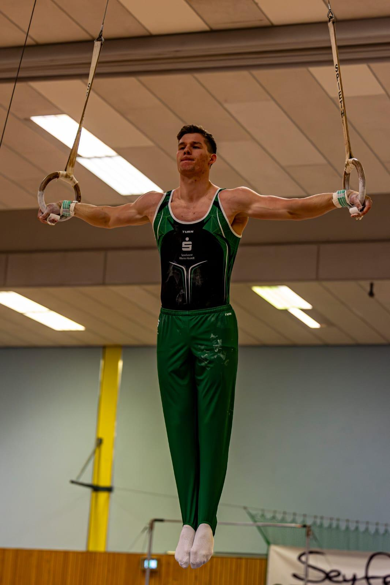

Thesis on enzyme production
Process optimization for industrial enzyme manufacture, combining experimental design, yield analysis and practical scale-up.
I build practical systems for enzyme production, plasmid planning, and lab workflows. Clean thinking from gymnastics guides how I shape experiments and software into repeatable results.
From a biotech thesis to a bioinformatics utility, each project is chosen for clarity, reproducibility, and immediate use.
Process optimization for industrial enzyme manufacture, combining experimental design, yield analysis and practical scale-up.
A fast sequence analysis tool for plasmid restriction planning and digest prediction.
View projectGymnastics is the discipline behind my work habits—precision, consistency, and intentional improvement.
I work at the intersection of biology and code. My focus is on systems that make experiments easier to plan, analyze and repeat—without losing sight of practical lab constraints.
Structured process design from lab thesis to production-ready workflows.
Software that supports clear decisions in sequence analysis and experimental planning.
Gymnastics keeps attention sharp, improving how I iterate on every project.
Driven by outcomes, not complexity. I simplify tools so teams can focus on results, not configuration.
